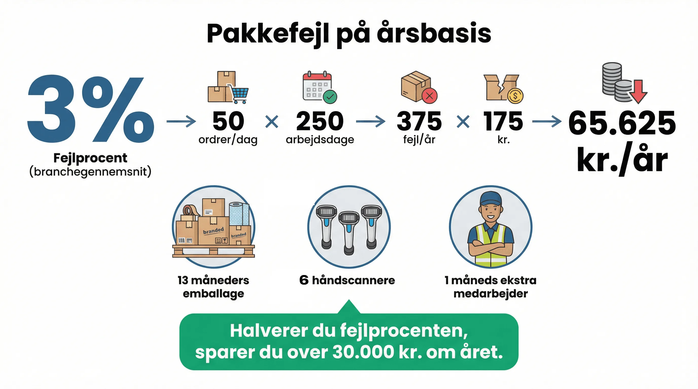

Manuel drift virker, til det ikke gør det mere. Mange webshops starter med Excel, Post-its og mundtlige aftaler. Det er billigt og fleksibelt i starten.
Men der er et punkt, hvor manuel drift begynder at koste mere end en WMS-investering. Denne guide viser hvornår du rammer det punkt.
Hvad er manuel drift?
Manuel drift er lageroperationer uden understøttende software: ordrer printes ud, varer plukkes uden scanning, labels genereres manuelt i fragtportaler, og lagerstatus opdateres i Excel eller på papir.
WMS automatiserer disse processer: ordrer modtages automatisk, plukruter optimeres, varer scannes og verificeres, labels genereres automatisk, og lagerstatus er realtids.
👉 Vil du se regnestykket for dit specifikke volumen? Få en konkret beregning
Direkte sammenligning
| Faktor | Manuel drift (100 ord/dag) | WMS (100 ord/dag) |
|---|---|---|
| Fejlrate | ~2-3% | ~0,2-0,5% |
| Fejlomkostning/md | 6.000-9.000 kr. | 600-1.500 kr. |
| Pakker/time/person | 30-40 | 60-80 |
| Onboarding ny medarbejder | 2-3 uger | 1-2 dage |
| Lageroptælling | 1-2 dage/kvartal | Løbende automatisk |
Ved 100 ordrer/dag kan besparelsen på fejlreduktion alene betale for et WMS-abonnement inden for 3-4 måneder.

Fordele ved WMS over manuel drift
Scanning fjerner fejl: Når medarbejderen scanner varen, bekræfter systemet om det er den rigtige. Manuel pluk afhænger af menneskers koncentration, som varierer.
Plukoptimering: WMS beregner den korteste rute gennem lageret. Manuel drift er afhængig af medarbejderens hukommelse og rutine.
Real-time lagerstatus: Med WMS ved du altid hvad du har på lager. Manuel drift kræver optælling.
Sporbarhed: Hvem plukkede hvad, hvornår? WMS ved det. Manuel drift ved det ikke.
Onboarding: Ny medarbejder følger systemets instruktioner fra dag ét. Manuel drift kræver mentoring.
Typiske fejl
- Tror at problemerne skyldes medarbejderne frem for systemet
- Investerer i mere mandskab frem for bedre processer
- Venter på "det rigtige tidspunkt" at implementere
- Undervurderer onboarding-byrden ved manuel drift i peak-perioder
- Vinhuset: systemet sad i hovedet på to mennesker
- Sygeplejebutikken: fejlprocent fra op til 10 til nul